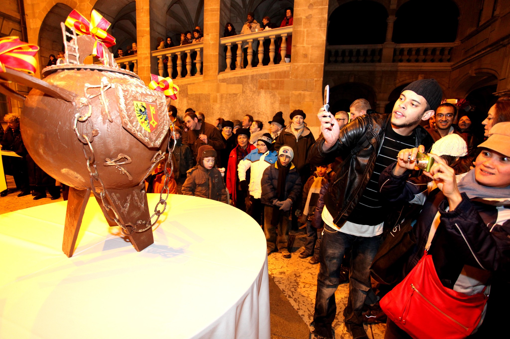

Au sujet des Mythe
Mythe de Genève
• La fête de l'Escalade (1602) : L'histoire la plus célèbre de Genève célèbre la défaite de l'attaque surprise des troupes du duc de Savoie dans la nuit du 11 au 12 décembre 1602. La légende populaire met en avant Mère Royaume, une habitante qui versa une marmite de soupe bouillante sur la tête d'un soldat ennemi depuis sa fenêtre. En souvenir, on déguste chaque année une marmite en chocolat.
• Le monstre de Frankenstein : C'est dans une villa au bord du lac Léman (la Villa Diodati) qu'en 1816, lors d'un été pluvieux, Mary Shelley imagina le mythe de Frankenstein et de sa créature, inspirée par les violents orages qui éclataient sur le lac et les expériences scientifiques de l'époque.
